Bài 12: Bố cục trang và in ấn
Bài 12: Bố cục trang và in ấn
/en/excel/kiểm tra chính tả/nội dung/
Giới thiệu
Có thể đôi khi bạn muốnin sổ làm việcđể xem và chia sẻ dữ liệu của mìnhngoại tuyến. Sau khi bạn đã chọn cài đặtbố cục trang, bạn có thể dễ dàng xem trước và in sổ làm việc từ Excel bằng cách sử dụng ngănIn.
Xem video bên dưới để tìm hiểu thêm về bố cục trang và in ấn.
Để truy cập khung In:
- Chọn tabTệp.Backstage viewsẽ xuất hiện.
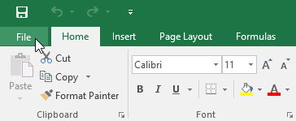
2. ChọnIn. KhungInsẽ xuất hiện.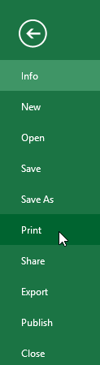
Nhấp vào các nút trong phần tương tác bên dưới để tìm hiểu thêm về cách sử dụng khung In.
chỉnh sửa điểm phát sóng
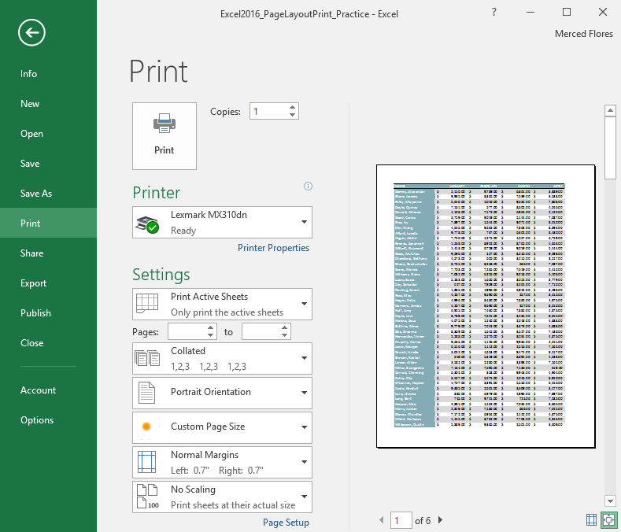
Chia tỷ lệ
Tại đây, bạn có thể chọn cách chia tỷ lệ bảng tính của mình để in.
Lề
Tại đây, bạn có thể điều chỉnh lề trang.
Khổ giấy
Bạn có thể chọn khổ giấy muốn sử dụng nếu máy in của bạn hỗ trợ cài đặt này.
Định hướng trang
Tại đây, bạn có thể chọn hướng dọc hoặc hướng ngang.
đối chiếu
Nếu bạn in nhiều bản sao, bạn có thể chọn xem chúng sẽ được chia bộ hay không chia bộ.
Phạm vi in
Tại đây, bạn có thể chọn in các trang tính đang hoạt động, toàn bộ sổ làm việc hoặc một vùng chọn.
Máy in
Nếu bạn có nhiều máy in, hãy chọn máy in bạn muốn sử dụng.
In
Bấm vào nút này để in sổ làm việc.
Bản sao
Tại đây, bạn có thể chọn số lượng bản sao bạn muốn in.
Lựa chọn trang
Bạn có thể nhấp vào mũi tên để xem một trang khác trong khung Xem trước.
Phóng to trang/Hiển thị lề
Nút Zoom to Page ở bên phải sẽ phóng to và thu nhỏ trong khung Preview.
Nút Hiển thị lề ở bên trái sẽ hiển thị lề trong khung Xem trước.
Ngăn xem trước
Tại đây, bạn có thể xem bản xem trước trang tính của mình sẽ trông như thế nào khi được in.
Để in một sổ làm việc:
- Điều hướng đến khungIn, sau đó chọnmáy inmong muốn.
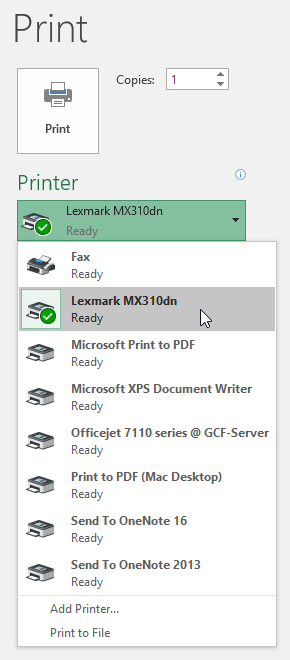
2. Nhập số lượngbản saobạn muốn in.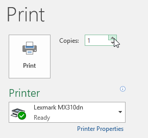
3. Chọn bất kỳcài đặtbổ sung nào nếu cần (xem phần tương tác ở trên).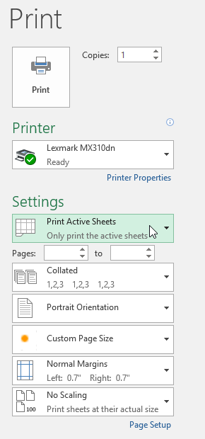
4. Nhấp vàoIn.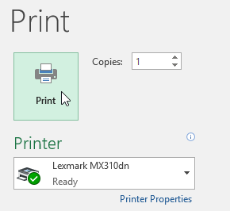
Chọn vùng in
Trước khi in sổ làm việc Excel, điều quan trọng là phải quyết định chính xác thông tin bạn muốn in. Ví dụ: nếu bạn có nhiều trang tính trong sổ làm việc, bạn sẽ cần phải quyết định xem bạn muốn intoàn bộsổ làm việchay chỉhoạt độngtrang tính. Cũng có thể đôi khi bạn chỉ muốn in mộtlựa chọnnội dung từ sổ làm việc của mình.
Để in các trang đang hoạt động:
Các trang tính được coi là đang hoạt động khiđược chọn.
- Chọnbảng tínhbạn muốn in. Để innhiềutrang tính, hãy nhấp vào trang tính đầu tiên, giữ phímCtrltrên bàn phím, sau đó nhấp vào bất kỳ trang tính nào khác mà bạn muốn chọn.
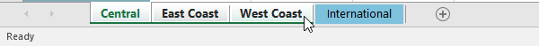
2. Điều hướng đến khungIn. 3. ChọnIn các trang hiện hoạttừ trình đơn thả xuốngPhạm vi in.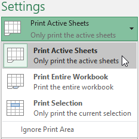
4. Nhấp vào nútIn.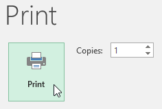
Để in toàn bộ sổ làm việc:
- Điều hướng đến khungIn.
- ChọnIn toàn bộ sổ làm việctừ trình đơn thả xuốngPhạm vi in.
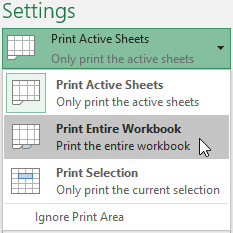
3. Nhấp vào nútIn.Để in một lựa chọn:
Trong ví dụ của chúng tôi, chúng tôi sẽ in bản ghi của 40 nhân viên bán hàng hàng đầu trên bảng tính Central.
- Chọnôbạn muốn in.
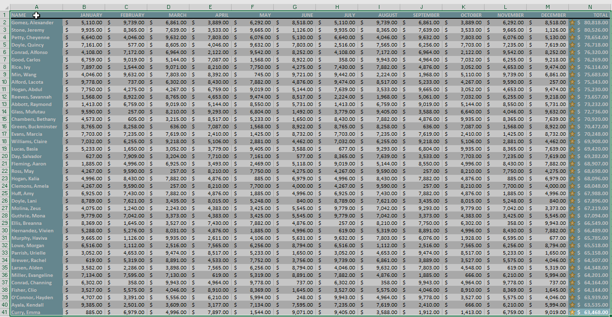
2. Điều hướng đến khungIn. 3. ChọnLựa chọn intừ trình đơn thả xuốngPhạm vi in.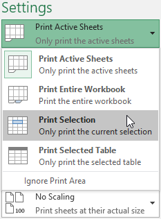
4. bản xem trướclựa chọn của bạn sẽ xuất hiện trong khungXem trước.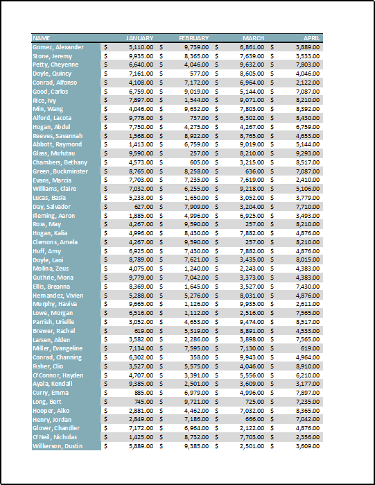
5. Nhấp vào nútInđể in lựa chọn.Nếu muốn, bạn cũng có thể đặt trướcvùng inđể có thể hình dung được ô nào sẽ được in khi bạn làm việc trong Excel. Chỉ cầnchọncác ô bạn muốn in, nhấp vào tabBố cục trang, chọn lệnhVùng in, sau đó chọnĐặt vùng in. Hãy nhớ rằng nếu bạn cần in toàn bộ sổ làm việc, bạn cần phải xóa vùng in.
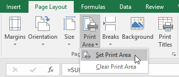
Điều chỉnh nội dung
Đôi khi, bạn có thể cần thực hiệnđiều chỉnh nhỏtừ ngăn In để nội dung sổ làm việc của bạn vừa khít với trang in. Ngăn In bao gồm một số công cụ giúp điều chỉnh và chia tỷ lệ nội dung của bạn, bao gồmchia tỷ lệvàtranglề.
Để thay đổi hướng trang:
Excel cung cấp hai tùy chọn hướng trang:ngangvàdọc.Phong cảnhđịnh hướng trangtheo chiều ngang, trong khidọcđịnh hướng trangtheo chiều dọc. Trong ví dụ của chúng tôi, chúng tôi sẽ đặt hướng trang thành ngang.
- Điều hướng đến khungIn.
- Chọn hướng mong muốn từ trình đơn thả xuốngHướng trang. Trong ví dụ của chúng tôi, chúng tôi sẽ chọnĐịnh hướng cảnh quan.
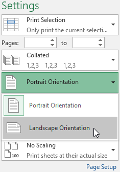
3. Hướng trang mới sẽ được hiển thị trong khung Xem trước.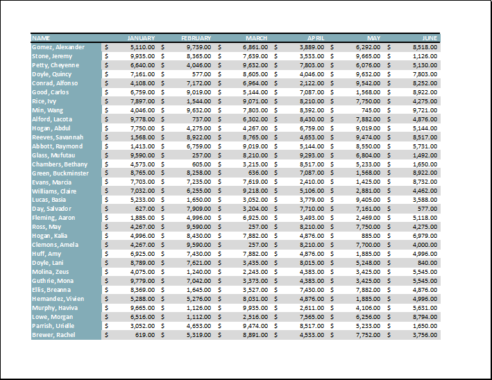
Để vừa nội dung trước khi in:
Nếu một số nội dung của bạn bị máy in cắt bỏ, bạn có thể sử dụngchia tỷ lệđể tự động điều chỉnh sổ làm việc của mình cho phù hợp với trang.
- Điều hướng đến khungIn. Trong ví dụ của chúng tôi, chúng tôi có thể thấy trong khung Xem trước rằng nội dung của chúng tôi sẽ bị cắt khi in.
2. Chọn tùy chọn mong muốn từ menu thả xuốngScaling. Trong ví dụ của chúng tôi, chúng tôi sẽ chọnKhớp tất cả các cột trên một trang.
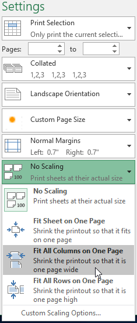
3. Bảng tính sẽ đượccô đọngđể vừa với một trang duy nhất.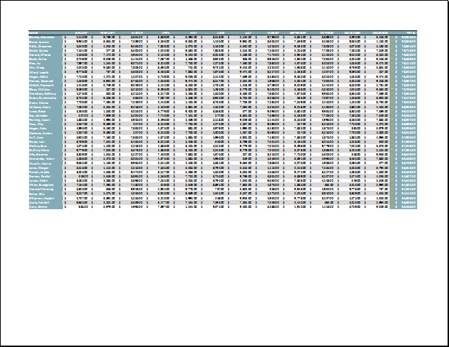
Hãy nhớ rằng các trang tính sẽ trở nênkhó đọchơnkhi chúng được thu nhỏ lại, vì vậy bạn có thể không muốn sử dụng tùy chọn này khi in một trang tính có nhiều thông tin. Trong ví dụ của chúng tôi, chúng tôi sẽ thay đổi cài đặt chia tỷ lệ thànhKhông chia tỷ lệ**.
Để bao gồm Tiêu đề In:
Nếu bảng tính của bạn sử dụngtiêu đềtiêu đề, điều quan trọng là phải đưa các tiêu đề này vào mỗi trang trong bảng tính được in của bạn. Sẽ rất khó để đọc một cuốn sách in nếu tiêu đề chỉ xuất hiện ở trang đầu tiên. LệnhIn Tiêu đềcho phép bạn chọn các hàng và cột cụ thể để xuất hiện trên mỗi trang.
- Nhấp vào tabBố cục trangtrênRibbon, sau đó chọn lệnhIn tiêu đề.
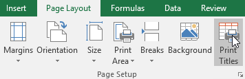
2. Hộp thoạiThiết lập trangsẽ xuất hiện. Từ đây, bạn có thể chọnhànghoặccộtđể lặp lại trên mỗi trang. Trong ví dụ của chúng tôi, chúng tôi sẽ lặp lại một hàng trước. 3. Nhấp vào nútThu gọn hộp thoạibên cạnh trườngHàng lặp lại ở trên cùng:.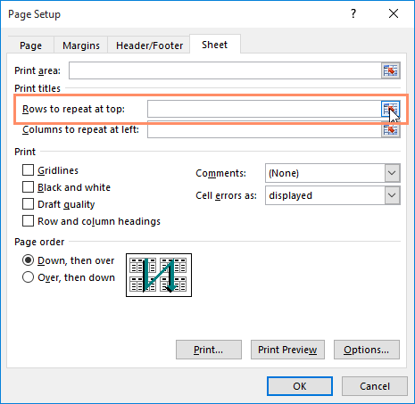
4. Con trỏ sẽ trở thành mộtmũi tên lựa chọnnhỏ và hộp thoạiThiết lập trangsẽ được thu gọn. Chọnhàngbạn muốn lặp lại ở đầu mỗi trang được in. Trong ví dụ của chúng tôi, chúng tôi sẽ chọn hàng 1.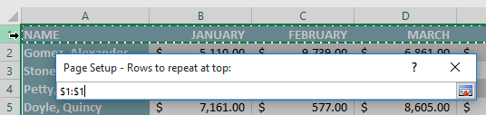
5. Hàng 1 sẽ được thêm vào trườngHàng lặp lại ở trên cùng:. Nhấp lại vào nútThu gọn hộp thoại.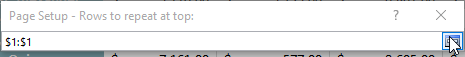
6. Hộp thoạiThiết lập trangsẽ mở rộng. Để lặp lại một cột, hãy sử dụng quy trình tương tự được hiển thị trong bước 4 và 5. Trong ví dụ của chúng tôi, chúng tôi đã chọn lặp lại hàng 1 và cột A. 7. Khi bạn hài lòng với lựa chọn của mình, hãy nhấp vàoOK.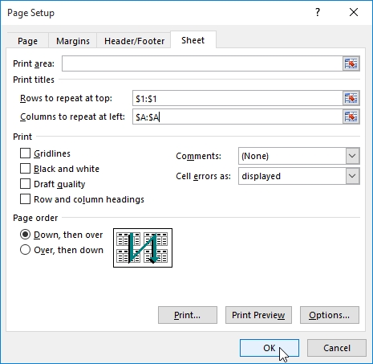
8. Trong ví dụ của chúng tôi, hàng 1 xuất hiện ở đầu mỗi trang và cột A xuất hiện ở bên trái mỗi trang.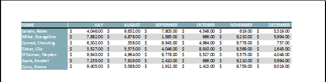
Để điều chỉnh ngắt trang:
- Bấm vào lệnhXem trước ngắt trangđể thay đổi sang chế độ xem Ngắt trang.
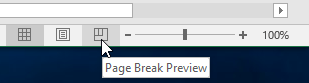
2. Dọc và ngangđường chấm màu xanhbiểu thị ngắt trang. Nhấp và kéo một trong những dòng này để điều chỉnh ngắt trang.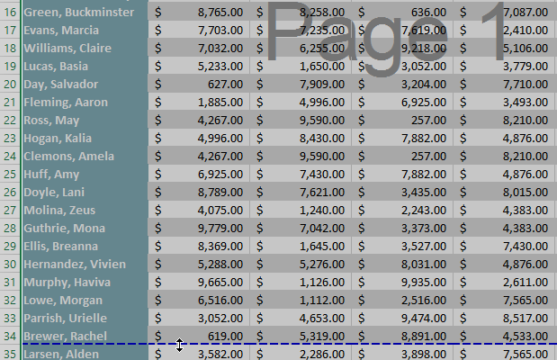
3. Trong ví dụ của chúng tôi, chúng tôi đã đặt ngắt trang theo chiều ngang giữa hàng 21 và 22.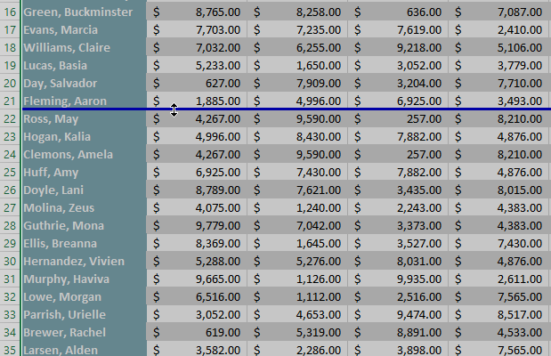
4. Trong ví dụ của chúng tôi, tất cả các trang hiện hiển thị cùng số hàng do có sự thay đổi trong ngắt trang.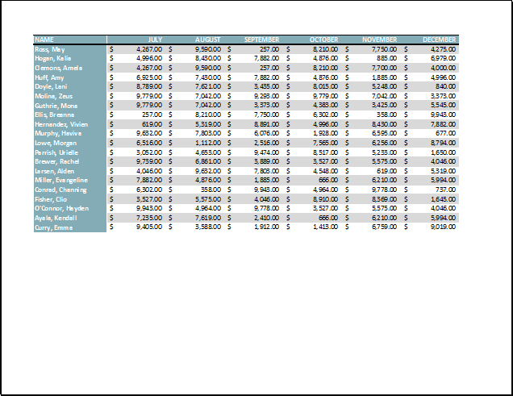
Để sửa đổi lề trong khung Xem trước:
lềlà khoảng cách giữa nội dung của bạn và cạnh của trang. Đôi khi bạn có thể cầnđiều chỉnhlề để làm cho dữ liệu của bạn vừa vặn hơn. Bạn có thể sửa đổi lề trang từ khungIn.
- Điều hướng đến khungIn.
- Chọn kích thước lề mong muốn từ trình đơn thả xuốngLề trang. Trong ví dụ của chúng tôi, chúng tôi sẽ chọnThu hẹp.
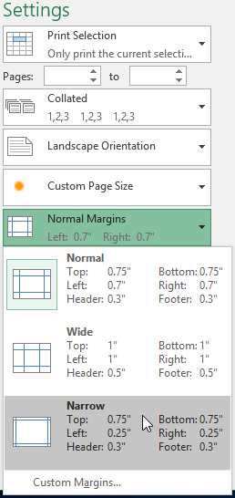
3. Lề trang mới sẽ được hiển thị trong khung Preview.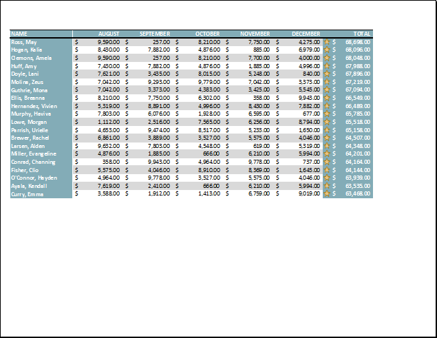
Bạn có thể điều chỉnh lề theo cách thủ công bằng cách nhấp vào nútHiển thị lềở góc dưới bên phải, sau đó kéođiểm đánh dấu lềtrong ngănXem trước.
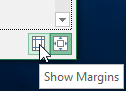
Thử thách!
- Mở sổ làm việc thực hành của chúng tôi.
- Nhấp vào tabEast Coastở cuối sổ làm việc.
- Trong tabBố cục trang, hãy sử dụng tính năngIn tiêu đềđể lặp lạihàng 1ở trên cùng vàcột Aở bên trái.
- Sử dụng lệnhXem trước ngắt trang, di chuyển dấu ngắt giữa các hàng 47 và 48 lên trên để nó nằm giữa các hàng 40 và 41.
- TrongBchế độ xem giai đoạn đóng gói*, hãy mởKhung in**.
- TrongKhung in, thay đổihướngthànhPhong cảnh.
- Thay đổi lề thànhThu hẹp.
- Thay đổi tỷ lệ thànhVừa tất cả các cột trên một trang.
- Khi bạn hoàn tất, bản xem trước bản in của bạn sẽ trông như thế này:

/en/excel/giới thiệu công thức/nội dung/